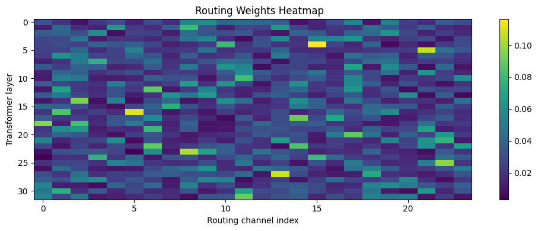

Parallel Logic Expert with Operator Routing
Abstract
We introduce a logic-augmented transformer pathway that routes token-level representations into fixed fuzzy logical operators (AND/OR/NOT) or straight-through-estimation, so the network learns compositional structure rather than an ensemble of expert networks with shared architecture design. At each backbone layer, the hidden states are projected to a lower dimensional K, Q, which the running logic state queries (cross-attention). The attention matrix is routed, and local windows over either token or gate-channel axes are composed. The final logic state is fused with the backbone features before classification. The proposed architecture augmentation imposes structured, interpretable compositions over token features. A key design dimension is the axis of composition: intra-token compositions (feature axis) compares features within a token, while inter-token compositions (sequence axis) compares features across neighboring tokens. We evaluate these design choices under controlled settings with matched parameter budgets, report task performance, and mechanism-level visualizations of the activations of the novel components.
1. Introduction
Transformers provide strong performance on a wide variety of tasks [1]. Both chain-of-thought (CoT) prompting and reasoning models can greatly improve performance on reasoning tasks [2, 3]. However, many CoT approaches use N-shot prompting. Additionally, both CoT and reasoning models utilize reasoning by iterative and extended inference, which requires far more tokens. This increases inference costs for many tasks [2].
Our approach instead introduces a novel architecture for structured computation within the latent space, with no additional tokens needed. We will test how this constrained, logic-inspired pathway affects performance on reasoning problems and generalization.
Mixture-of-Experts (MoE) models [4, 5, 6] introduce conditional computation by routing tokens to specialized subnetworks, or weighting the results of several/all experts. Our method introduces conditional computation by routing and weighting tokens to logical operators. In this formulation, the operator routing is learned rather than expert weights. When tied with attention, this method may allow robust routing in the logic space. This space has forced sparsity due to softmax and local compositions (local intra-token or inter-token windows), which may allow the emergence of specialized operator-feature connections.
Our activation metrics allow learned logic compositions to be interpreted. Routing entropy and fusion $\alpha$ parameters allow us to measure the utilization of the logic expert. Experiments on logical reasoning benchmarks compare the Baseline, the No-Gate Control network (a baseline with matched parameter count for fair comparison), and the logic expert variants.
A core design question is how the local operator windows should be applied in the gate compositions. Our first implementation applies capacity on the channel axis (neighboring channels on one token). The next design applies capacity on the token axis: each channel compares the same indexed feature on neighboring tokens (channels remain independent). This axis change can have a large impact on which feature relationships are learnable, which has large implications for performance. Figure 1 provides a high-level view of the architecture.
Contributions of this paper are: (1) inter-token compositional routing with operator reductions and residual logic-state updates; (2) controlled ablations over logic dimension, gate count, window size/axis, gate mode, and fusion $\alpha$; and (3) evaluation on reasoning and transfer settings with mechanism-level metrics (routing entropy, fusion $\alpha$, and average gradient norm).

3. Methods
3.1. Architecture and State Representation
The logic-augmented architecture introduces the logic-expert pathway parallel to the transformer backbone. At each layer $t$, the backbone produces hidden states:
In parallel, the logic expert maintains logic states which are updated at every layer:
At each layer, the logic state attends to the backbone via multi-head cross-attention, producing attended logic features:
After the final layer, the logic state is fused with the backbone:
where $\alpha$ controls the contribution of the logic pathway.
Notation. $\pi_t$: routing weights; $s_t$: gate activations; $u_t$: routed gate activations; $B$: batch size; $S$: sequence length; $H$: backbone hidden dimension; $L$: logic-state dimension; $G$: gates per operator family (AND/OR/NOT), with total routed channels $3G$; $C_t$: local window size at layer $t$; $\tau$: routing softmax temperature.
3.2. Cross-Attention into Logic Space
At each layer, logic tokens act as queries, while backbone hidden states are projected to keys and values. This produces attended logic features:
These features serve as the input to the routing and composition stage.
3.3. Routing and Gate Computation
Routing and gate activation use separate learned projection matrices: $W_r$ produces routing logits, while $W_g$ produces gate activations.
Routings are computed from $\tilde{L}_t$:
Routing weights are:
Gate activations are computed as:
The routed soft activations are:
In soft mode, $u_t := u_t^{\mathrm{soft}}$. In STE mode (forward binarized), we use:
We split:
3.4. Windowed Operator Composition
Let $v \in [0,1]^{B \times S \times G}$ denote one operator group. Windows are causal and defined along either the inter-token axis (sequence), or intra-token axis (channels).
For inter-token composition:
Operators are:
Applying to routed groups:
AND and OR reduce to $[B,S,G]$. NOT is applied elementwise and flattened to $[B,S,G \cdot C_t]$, to preserve negation operation structure. The concatenated representation has dimension:
3.5. Layer Update and Residual Flow
The concatenated operator outputs are projected:
The logic state is updated via:
3.6. Output Fusion
After the final layer, fusion is applied as in Eq. (4). $\alpha$ may be fixed or learned; it directly controls the contribution of the logic expert.
4. Experiments
4.1. Setup
We use Llama-3.1-8B [13] as the shared backbone for all variants. We compare: (i) a Baseline model, (ii) a No-Gate Control (parameter-matched), and (iii+) the logic expert variants. The No-Gate Control serves as a parameter-matched control to separate routing effects from pure parameter-count gains. All variants use the 3 label classifier head. The original Llama head is not used. In this control, the parallel branch excludes cross-attention, operator routing, and compositional gating. All experiments use the AdamW [14] optimizer and cross-entropy loss. Values are collected on a single NVIDIA RTX PRO 6000 Blackwell Server Edition GPU (CUDA 12.8) running on Google Colab.
4.2. Logical Reasoning -- ProofWriter
We use the ProofWriter [15] dataset to compare logical reasoning to the baselines. ProofWriter is a logical reasoning dataset where each sample contains a small rulebase (facts plus rules) and a query to evaluate as true, false, or unknown. It is useful here because it directly tests multi-step compositional inference, which matches the intended behavior of the routed logic pathway. We use deterministic, matched sampling across all models (10k train, 5k validation, all problem depths). Unless otherwise noted, all runs use matched seeds. Main runs are trained for 3 epochs; longer training only decreased classification due to overfitting.
4.3. Beyond Logic -- Multi-Genre Natural Language (MNLI)
To test performance beyond rulebase logic tasks, we evaluate performance on Multi-Genre Natural Language (MNLI) [16]. MNLI allows us to evaluate the natural language understanding of the model. MNLI has logical multi-class labels (Entailment, Neutral, Contradiction), this allows us to map to the same 3-label classification head used for ProofWriter.
4.4. Hyperparameter Evaluations
Primary hyperparameters are logic dimension: $L$, gate count: $G$, gate mode: (soft vs STE), gate window size: $C_t$, window axis: (inter-token vs intra-token), fusion $\alpha$ mode: (fixed vs learned), and initial fusion $\alpha$. We validate on task validation sets; we use the No-Gate Control architecture to avoid attributing gains to unmatched model size.
4.5. Metrics
Training metrics are validation accuracy and validation loss. Operator mechanism metrics are routing entropy and fusion $\alpha$. We also report average gradient norm (Avg Grad Norm) as an optimization-health signal. Stable gradient norms generally indicate smoother updates, very large norms can indicate unstable training dynamics, small gradient norms indicates arrested training.
5. Results
5.1. ProofWriter
Table 1 reports final validation accuracy under the evaluation protocol used for each run, validation loss, and fusion parameter state (fixed vs learned) after 3 epochs.
The parameter-matched control model substantially outperforms the Baseline, indicating that additional parallel capacity alone already improves performance, while routing variants provide the strongest overall scores in this setting.
The best observed ProofWriter result is the inter-token routed variant with $G=8$ and fixed $\alpha=0.01$ (0.562 val accuracy), compared with 0.525 for No-Gate Control and 0.417 for Baseline. Inter-token routing is consistently competitive with or better than intra-token routing at matched gate count, while increasing to $G=16$ under these settings reduces accuracy (0.501), indicating that more routed channels do not automatically improve quality. Additional hyperparameters listed in the appendix.
The mechanism columns in Table 1 show routed variants have substantially lower gradient norms (about 10.41--10.96) than the Baseline (29.38), while No-Gate Control is intermediate (11.14). This is consistent with more stable update magnitudes in the routed settings under the current training regime. Routing entropy is tightly clustered around 3.067 for the $G=8$ routed runs, but rises to 3.7483 for $G=16$, where validation quality drops. In this sweep, higher routing entropy at larger gate count appears to coincide with weaker task performance, suggesting a more diffuse routing regime that does not translate into better accuracy.
| Model | Validation Accuracy | Validation Loss | Fusion $\alpha$ | Routing Entropy | Avg Grad Norm |
|---|---|---|---|---|---|
| Baseline | 0.417 | 1.063 | -- | -- | 29.3765 |
| No-Gate Control | 0.525 | 0.820 | 0.00001 (fixed) | -- | 11.1387 |
| Routed (intra, G=8) | 0.542 | 0.818 | 0.00001 (fixed) | 3.0675 | 10.5972 |
| Routed (inter, G=8) | 0.546 | 0.819 | 0.1 (fixed) | 3.0668 | 10.4154 |
| Routed (inter, G=8) | 0.562 | 0.816 | 0.01 (fixed) | 3.0666 | 10.4054 |
| Routed (inter, G=8) | 0.546 | 0.819 | 0.006 (learned) | 3.0666 | 10.5527 |
| Routed (inter, G=16) | 0.501 | 0.837 | 0.00001 (fixed) | 3.7483 | 10.9610 |
Table 1: ProofWriter validation results after 3 epochs. Routed variants outperform both the Baseline and No-Gate Control. The best result is inter-token routing with G=8 and fixed α=0.01.
5.2. Size and Transfer
A key confound in models is added trainable parameters. Table 2 confirms close parameter matching between No-Gate Control and routed variants (only small differences), the single-task gains from the best routed model are very unlikely to be explained solely by increased parameter-count.
| Model Variant | Trainable Parameters |
|---|---|
| Baseline | 7,504,936,963 |
| No-Gate Control | 7,582,192,484 |
| Routed (G=8) | 7,579,068,164 |
| Routed (G=16) | 7,579,725,060 |
Table 2: Trainable parameter counts across model variants, confirming close parameter matching between No-Gate Control and routed variants.
5.3. Multi-Genre Natural Language (MNLI)
MNLI [16] combines sentence understanding with logic multi-class labels. We map the labels to the ProofWriter classes (contradiction $\rightarrow 0$, entailment $\rightarrow 1$, neutral $\rightarrow 2$). For comparability, evaluation uses matched sampling. Table 3 reports MNLI results.
| Model | MNLI Val Acc | MNLI Val Loss |
|---|---|---|
| No-Gate Control | 0.89 | 0.34 |
| Routed (intra, G=8) | 0.88 | 0.36 |
| Routed (inter, G=8) | 0.88 | 0.39 |
Table 3: MNLI single-task validation results. No-Gate Control achieves the highest accuracy (0.89), with routed variants close behind.
Table 3 reports MNLI results. On MNLI, No-Gate Control achieves the highest validation accuracy (0.888), with routed variants close behind (0.880 intra, 0.878 inter). This suggests broadly similar transfer performance at this scale; without multi-seed variance estimates, these small margins should be interpreted as comparable rather than decisive. Transfer behavior appears dependent on the supervision regime and routing configuration.
5.4. Multi-task Training
For multi-task training, each mini-batch is sampled from a 50/50 mixture of ProofWriter and MNLI. This experiment tests whether routing can jointly optimize symbolic-style and open-domain NLI supervision without degrading either task. Total training steps and optimizer hyperparameters are matched to single-task runs, and we report per-task validation metrics after joint training.
| Model | ProofWriter Acc | MNLI Acc | Mean |
|---|---|---|---|
| No-Gate Control | 0.544 | 0.879 | 0.712 |
| Routed (inter, G=8) | 0.536 | 0.881 | 0.709 |
Table 4: Multi-task (50/50 ProofWriter + MNLI) validation results. No-Gate Control and routed variants show near-tied aggregate performance.
Table 4 reports the 50/50 multi-task evaluation. In the joint setting, No-Gate Control attains the higher average accuracy (0.712 vs 0.709), while Routed (inter, $G=8$) attains slightly higher MNLI accuracy (0.881 vs 0.879). This indicates a small task trade-off under 50/50 mixing: routing is competitive in aggregate and can preserve transfer-side performance, but these differences are very small and are best interpreted as similar overall performance under the current multi-task configuration.
6. Discussion
The single-task results show that the routed logic expert variants can outperform both the Baseline and the parameter-matched No-Gate Control, suggesting that gains are not solely due to increased capacity and are influenced by compositional routing bias. In contrast, the new 50/50 multi-task results show a tighter regime with near-tied outcomes: No-Gate Control has a slightly higher average accuracy (0.712 vs 0.709), while the routed variant is slightly higher on MNLI within the joint setting (0.881 vs 0.879). Given the tiny margins, these results are best read as similar performance pending multi-seed validation. Single-task MNLI transfer follows the same pattern, while ProofWriter shows larger routed gains. Overall, the evidence suggests a task-dependent benefit profile in which routing is more helpful for logical-composition supervision.
Fusion $\alpha$ provides additional insight: models with moderate nonzero $\alpha$ values indicate that the routing branch is actively contributing to predictions, while near-zero values suggest the model ignores the logic pathway. This highlights the importance of monitoring mechanism-level metrics alongside task performance.
The inter-token capacity formulation changes the inductive bias of gate composition from cross-channel local comparison to cross-token local comparison. This makes each gate channel temporally local while preserving channel independence. Empirically, this design should be interpreted together with routing entropy and fusion $\alpha$: low entropy with stable nonzero $\alpha$ indicates specialized gates that remain active in final prediction, but these mechanism diagnostics should be interpreted alongside task-level metrics and held-out evaluation [17].
| Model | Validation Acc | Validation Loss |
|---|---|---|
| Routed-Gate-Only | 0.5348 | 0.832 |
| No-Gate Control | 0.4646 | 1.065 |
Table 5: Routed-Gate-Only ablation vs. No-Gate Control on ProofWriter. Results from an earlier implementation with different hyperparameters; not directly comparable to Table 1.
Table 5 suggests that cross-attention is likely not the sole source of gains in the logic expert. However, these values come from an earlier implementation with additional architectural and hyperparameter differences, so both the baseline and logic-expert scores are not directly comparable to the main results in Table 1.
Initialization of the learnable fusion $\alpha$ also affects optimization stability. In our sweeps, values in the 0.01--0.25 range were generally stable, with 0.1 yielding the strongest observed validation accuracy.
6.1. Routing Visualization
Figure 2 visualizes routing specialization directly. We see there the heatmap is sparse, with only a few hot-spots, this implies there are several operators that dominate contribution. This figure is used alongside routing entropy, which summarizes concentration numerically, while the heatmap shows where specialization appears across layers.

7. Limitations
Additional tasks beyond the initial benchmark sets are needed to establish any generalization. We only evaluate one logical reasoning benchmark, more would allow us to evaluate generalization, specifically of the logic expert. The routing design also introduces additional hyperparameters (gate count, window size, routing sparsity) whose interactions are not yet fully explored.
8. Conclusion
This architecture shifts conditional inference from routing among independent neural experts to routing over operator groups, yielding a novel, compact, and interpretable compositional mechanism. Across matched-capacity comparisons, results indicate that the routed logic path can improve over both the backbone Baseline and a parameter-matched No-Gate Control in single-task runs, with inter-token composition emerging as a strong setting in our current sweeps. In MNLI transfer and joint 50/50 multi-task training, routed and No-Gate variants are near-parity under the current setup.
Mechanism-level diagnostics (routing entropy and fusion $\alpha$) provide direct visibility into whether routing is specialized and whether the branch is actually used at prediction time. This work establishes an implementation-complete foundation for operator-routed reasoning. Immediate next steps are broader benchmark coverage, and targeted ablations.
References
- [1] Ashish Vaswani, Noam Shazeer, Niki Parmar, Jakob Uszkoreit, Llion Jones, Aidan N. Gomez, Łukasz Kaiser, and Illia Polosukhin. Attention is all you need. In Advances in Neural Information Processing Systems, 2017.
- [2] Jason Wei, Xuezhi Wang, Dale Schuurmans, Maarten Bosma, Fei Xia, Ed Chi, Quoc V. Le, and Denny Zhou. Chain-of-thought prompting elicits reasoning in large language models. In Advances in Neural Information Processing Systems, 2022.
- [3] Albert Q. Jiang, Alexandre Sablayrolles, Arthur Mensch, Chris Bamford, Devendra Singh Chaplot, Diego de las Casas, Florian Bressand, Gianna Lengyel, Guillaume Lample, Lucile Saulnier, et al. Mistral 7B. arXiv preprint arXiv:2310.06825, 2023.
- [4] Robert A. Jacobs, Michael I. Jordan, Steven J. Nowlan, and Geoffrey E. Hinton. Adaptive mixtures of local experts. Neural Computation, 3(1):79–87, 1991.
- [5] Noam Shazeer, Azalia Mirhoseini, Krzysztof Maziarz, Andy Davis, Quoc Le, Geoffrey Hinton, and Jeff Dean. Outrageously large neural networks: The sparsely-gated mixture-of-experts layer. In International Conference on Learning Representations (ICLR), 2017.
- [6] William Fedus, Barret Zoph, and Noam Shazeer. Switch Transformers: Scaling to Trillion Parameter Models with Simple and Efficient Sparsity. Journal of Machine Learning Research, 23(120):1–39, 2022.
- [7] Igor Aleksander and Helen Morton. An Introduction to Neural Computing. Chapman & Hall, 1990.
- [8] Felix Petersen, Christian Borgelt, Hilde Kuehne, and Oliver Deussen. Deep differentiable logic gate networks. In International Conference on Machine Learning (ICML), 2022.
- [9] Ryan Riegel, Alexander Gray, Francois Luus, Naweed Khan, Ndivhuwo Makondo, Ismail Yunus Akhalwaya, Joydeep Sen, Ronald Fagin, Mikhail Yurochkin, Ulas Rife, et al. Logical neural networks. arXiv preprint arXiv:2006.13155, 2020.
- [10] Michael Zimmer, Claire Vernade, and Gergely Neu. Differentiable logic machines. In International Conference on Artificial Intelligence and Statistics (AISTATS), 2023.
- [11] Lotfi A. Zadeh. Fuzzy sets. Information and Control, 8(3):338–353, 1965.
- [12] Tarek R. Besold, Artur d'Avila Garcez, Sebastian Bader, Howard Bowman, Pedro Domingos, Pascal Hitzler, Kai-Uwe Kühnberger, Luis C. Lamb, Daniel Lowd, Priscila Machado Vieira Lima, et al. Neural-symbolic learning and reasoning: A survey and interpretation. In Neuro-Symbolic Ideas and Applications, 2017.
- [13] Hugo Touvron, Thibaut Lavril, Gautier Izacard, Xavier Martinet, Marie-Anne Lachaux, Timothée Lacroix, Baptiste Rozière, Naman Goyal, Eric Hambro, Faisal Azhar, et al. Llama: Open and efficient foundation language models. arXiv preprint arXiv:2302.13971, 2023.
- [14] Ilya Loshchilov and Frank Hutter. Decoupled weight decay regularization. In International Conference on Learning Representations (ICLR), 2019.
- [15] Oyvind Tafjord, Bhavana Dalvi, and Peter Clark. ProofWriter: Generating implications, proofs, and judgements for NLI. In Findings of the Association for Computational Linguistics: EMNLP, 2021.
- [16] Adina Williams, Nikita Nangia, and Samuel R. Bowman. A broad-coverage challenge corpus for sentence understanding through inference. In NAACL-HLT, 2018.
- [17] Daniel Keysers, Nathanael Schärli, Nathan Scales, Hila Gonen, Oana-Maria Camburu, Yury Bystrov, Aurelien Boffet, Jaemin Cho, Blaise Aguera y Arcas, and Ed H. Chi. Measuring compositional generalization: A comprehensive method on realistic data. In International Conference on Learning Representations (ICLR), 2020.
Appendix
A. ProofWriter Evaluation Details
This appendix summarizes the main ProofWriter configuration used in the experiments.
A.1. Settings and Hyperparameters
- Batch size: 30 (train), 30 (eval)
- Epochs: 3
- Learning rate: $1\times10^{-5}$
- Weight decay: 0.01
A.2. Dataset(s)
- ProofWriter Depth:
all(all allowed) - Train samples: 10,000
- Validation samples: 5,000
B. MNLI Evaluation Details
For MNLI transfer, labels are remapped into the shared three-class order used throughout this paper: contradiction $\rightarrow 0$, entailment $\rightarrow 1$, and neutral $\rightarrow 2$.
B.1. Dataset(s)
- Train samples: 4,000
- Validation samples: 200
B.2. Settings and Hyperparameters
- Train batch size: 30
- Eval batch size: 100
- Learning rate: $1\times10^{-5}$
- Weight decay: 0.01
- Logic dimension / gates / heads: 256 / 8 / 4
- Gate mode:
soft
C. Multi-task Evaluation Details
For multi-task experiments, each batch is sampled from a mix of ProofWriter and MNLI datasets.
C.1. Dataset(s)
- MNLI sampling ratio: 0.5
- ProofWriter sampling ratio: 0.5
- ProofWriter depth:
all - Train/validation samples: 10,000 / 1,000
C.2. Settings and Hyperparameters
- Train batch size: 20
- Eval batch size: 100
- Epochs: 6
- Learning rate: $1\times10^{-5}$
- Weight decay: 0.01
- Logic dimension / gates / heads: 256 / 8 / 4
- Fusion $\alpha$ init: 0.1
- Learn fusion $\alpha$:
True - Gate axis:
inter_token - Gate mode:
soft
D. Routed-Gate-Only vs No-Gate Evaluation Details
This appendix summarizes the overlapping configuration fields for Table 5.
D.1. Settings and Hyperparameters
- Epochs: 6
- Learning rate: $1\times10^{-5}$
E. ProofWriter Question Example
E.1. Rulebase
triple1: The cow is big. triple2: The cow needs the dog. triple3: The dog sees the rabbit. triple4: The rabbit chases the cow. triple5: The rabbit chases the dog. triple6: The rabbit is big. triple7: The rabbit sees the dog. rule1: If the cow is blue and the cow needs the rabbit then the cow needs the dog. rule2: If the cow chases the dog then the cow sees the rabbit. rule3: If something is big then it chases the dog.
E.2. Question & Answer
Question: The cow sees the rabbit? Answer: true